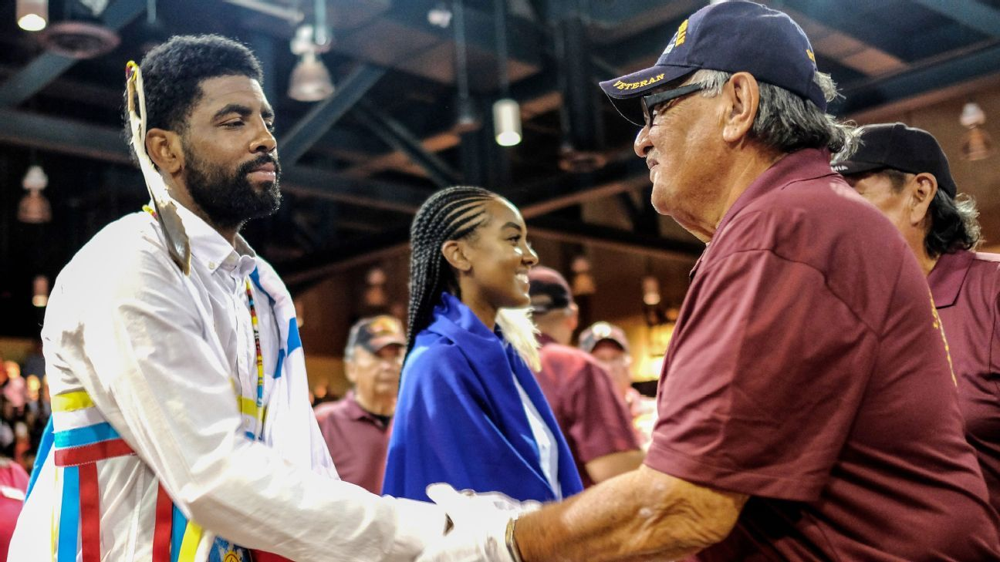
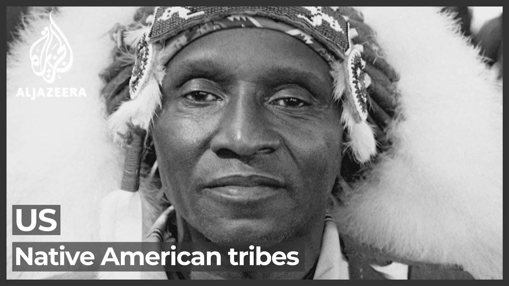

Sovereignty Is Being Redefined — By Us
Today, Afro-Native Americans wage a continuous battle for recognition, tribal membership, and basic rights. Tribal nations and federal courts are still reckoning with the legacy of the Freedmen. And the descendants are winning.
Cherokee Nation v. Nash — The Treaty Holds
On August 30, 2017, a federal court delivered the ruling Freedmen descendants had fought decades for: the Treaty of 1866 means what it says. Judge Thomas F. Hogan wrote that the Cherokee Freedmen's right to citizenship is directly proportional to that of native Cherokees — the Nation may define itself as it sees fit, but it must do so equally and evenhandedly for the descendants of Cherokee Freedmen.
The Cherokee Nation accepted the ruling and declined to appeal. Then it went further. In February 2021, the Cherokee Nation Supreme Court ruled unanimously that the words “by blood” must be struck from the Cherokee Constitution itself. Today, more than 8,500 citizens of Freedmen descent are enrolled Cherokee — voting, serving, and belonging. Principal Chief Chuck Hoskin Jr. has said it directly: a nation is stronger when it tells its whole story.
Muscogee (Creek) Nation — “By Blood” Ruled Void
Rhonda Grayson and Jeffrey Kennedy applied for Muscogee citizenship as descendants of Creek Freedmen — and were denied. They sued. In September 2023, a Muscogee district court ruled the Citizenship Board had violated the Treaty of 1866. And on July 23, 2025, the Muscogee Nation Supreme Court unanimously affirmed, declaring the “by blood” restrictions void from the beginning and ordering that citizenship be open to anyone who traces to an ancestor on either the Creek “by blood” roll or the Creek Freedmen roll.
The decision affects an estimated 44,000 Muscogee Freedmen descendants. Lead counsel Damario Solomon-Simmons — himself a descendant of Cow Tom, the Black Creek leader who helped secure the 1866 treaty — called it a victory for the rule of law and the sanctity of Indian treaties.
Implementation is still being fought out within the Nation's government — a reminder that this fight is continuous, and that recognition on paper must be matched by recognition in practice. The descendants and their advocates are not letting go. Neither should you.

The Federal Government Is Now on Notice

In early 2026, the U.S. Government Accountability Office released a landmark report on the Freedmen descendants of the Five Tribes — estimating their living population at 146,400 to 395,400 people and documenting the barriers they face in accessing federal health, education, and housing services owed under treaty obligations. Federal agencies, including HUD, have raised treaty-based concerns about programs that exclude Freedmen descendants.
This matters: the question of Freedmen rights is no longer a family story told around the kitchen table. It is a documented federal issue, with congressional attention, GAO numbers, and standing court precedent behind it.
Advocates like Marilyn Vann, president of the Descendants of Freedmen of the Five Civilized Tribes Association, have carried this fight for over two decades — from courtrooms to the halls of the U.S. Senate. The infrastructure of the movement exists. The legal precedents exist. The records exist. What the movement needs now is you — documented, counted, and standing in your rightful identity.
The Backdrop — Not the Prerequisite
The court battles and treaty fights chronicled on this page are the backdrop of the modern era — proof that the reclassifications of the past are being challenged and unwound at the highest levels. But understand the scope of this site: enrollment and citizenship are each nation's own matter, separate and distinct from the work we do here. We make no assertions about tribal acceptance or recognition.
What we assert is the step that comes before all of it, and that depends on no court, no council, and no acknowledgment list: self-identification. Federally recognized, state recognized, or unrecognized — Indigenous people are Indigenous people, and official census records count those who self-identify as such. Your identity is not pending anyone's decision. Reclaim it now; whatever you may choose to pursue afterward is yours to decide.
“I am only one, but I am one. I cannot do everything, but I can do something.”Edward Everett Hale — the spirit of every descendant who searches
Every search strengthens the record. Every record strengthens the case.
The fight for recognition is won descendant by descendant, document by document. Find your ancestors. Stand in your status. Be counted.